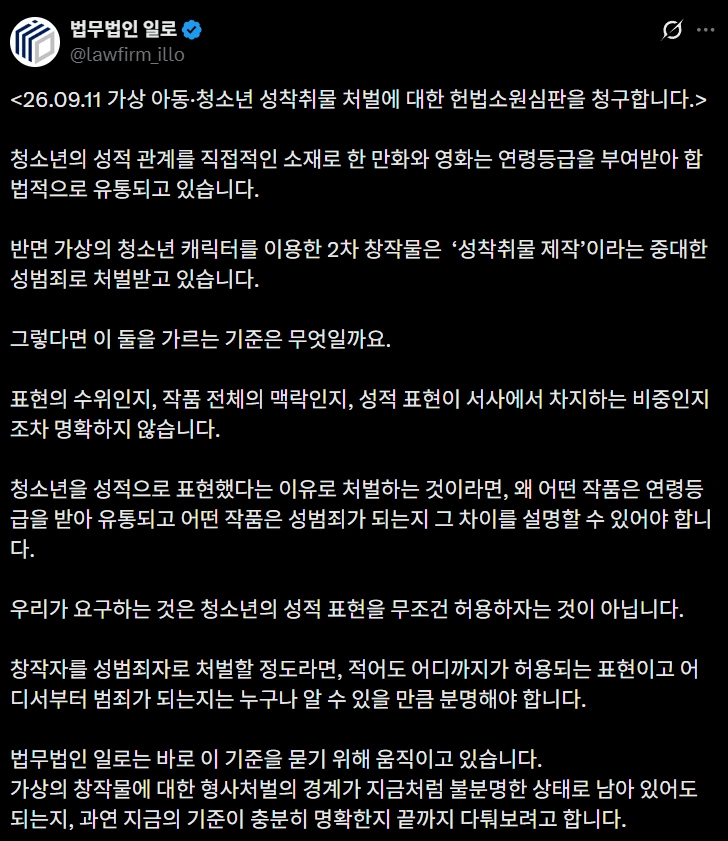
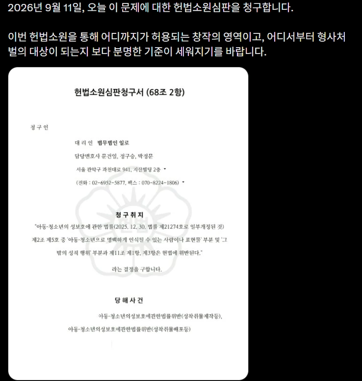

가자!!!!!!!!!!!!!!!!!!!!!!!!!!!!


가자!!!!!!!!!!!!!!!!!!!!!!!!!!!!
그래서 결론이 머임
블두순들은 잡되 형량은 조금낮춰주자 이건가
법 폐지 안 할 거면 똥짤, 고어짤, 몸무게 5000kg짤도 처벌해주면 안 되냐 이 놈들이 5000배는 더 보기 싫은데
어떤 개좆논리로 답변할지가 기대되네 ㅋㅋㅋ
어짜피 답 내려놓고 판결문은 짜맞추는데 뭐라고 아가리털지 궁금하긴 하다 좆습좆법을 뛰어넘는 희대의 개헛소리 할거아녀
판새가 꼴리면 이라고 하지않았나
관습헌법, 병역의의무를 뛰어넘는 어떤 개병신 판결이 나올지 궁금해진다 ㅋㅋㅋ
https://x.com/lawfirm_illo/status/1984175721716351152
전에 본 이것때문에 부정적이긴 함 결국 저 법에 여자도 쳐맞으니까 이제서야 고치자는 거잖아
악법은 없어져야하는게 맞지만 여태껏 행해지는거 봐왔을텐데 이제야 하자는게 적잖게 고깝다
씨발 또 여자가 당하니까야? 모금까지 해주네;
얼마전에 만장일치 합헌 나왔는데
조보아 나오는 가시는 아청법 안걸리냐?ㅋㅋ 걍 개ㅈ논리 병신법임 저거
피해자 없는 범죄 ㄷㄷ
저런 규제는 더 얼탱이없는 규제까지 내기 전 선행 발판 용도로 내는거임.
규제 반대하는게 무조건 2d 아동 야짤이나 보고 딸치기 때문인게 아니라, 개인이 그린 야한 2d 야짤만 가지고 있어도 잡혀가는 수준의, 철저히 정부에 의해 억압받는 세상이 될 것 같아서임.
높은 분들은 돈주고 아동들 실물로 사먹고 다니는데 저런거 통과돼도 아쉬울 거 없음
현실의 아동피해에대해서 신경좀 쓸것이지
저딴걸 헌재까지 오게만드는 법을 만든건 진짜 개짓거리여..
헌재 씹틀딱뿐인데 될꺼같냐 ㅋㅋ
참고) 남자잡혀갈땐 가만히있다가 여자잡혀가니까 움직이는거다
숨어있는 페미 정신병자, 분탕 밭갈이들 다 튀어나와서 블두순 타령하면서 아청법 찬성하고있네 ㅋㅋ
어차피 스윗틀딱새끼들이 결론 정해놨을거라서 별 기대는 안됨
시도는 계속 해봐야겠지만 저 뇌가 아니라 ㅈ대가리로 판단하는 늙병당뇨병말기환자 새끼들이 다 뒤질떄까지 변할 일은 없음
그리고 저 새끼들이 다 뒤져도 ㅈ대가리로 밖에 생각 못하는 동세대 스윗남페미 새끼들 때문에 변할 수 있을까?싶기도 함
피해자가 없는데 피해자가 생기는 재밌는 법 ㅋㅋ
천룡인 그 성별과 높으신 분들 눈밖에 나면 처벌하는 법
쿠팡한테는 찍소리 못 하더니 춘화나 잡고